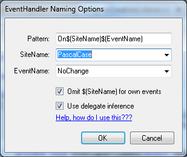

Better EventHandler names in Visual Studio 2010
Posted: Last updated:tl;dr: I made a Visual Studio extension, EventHandler Naming, that lets you customize generated eventhandler names and use delegate inference. Not perfect, but works. Download it in the Visual Studio Gallery
The problem
I've been annoyed by the eventhandler names generated by Visual Studio for years. No, I don't really want to name my methods txtName_TextChanged, which does not match any reasonable naming convention and looks ugly. I usually prefer something like OnNameTextChanged or something similar. Another thing that has annoyed me is
this.Load +=new EventHandler(OnLoad);
instead of just
this.Load += OnLoad;
So, I figured I could probably hack something together to fix these problems fairly easily. As it turns out, some of it was easy, some of it was hard and some of it was impossible.
How do you use it?
In the Tools menu there is a new menu item, EventHandler Naming. That will give you the options window shown here. The "Pattern" is what is used to create the eventhandler names, you can use two macros there, $(EventName) and $(SiteName). EventName is pretty self explanatory, but the SiteName can be the name of the variable/component that owns the event being subscribed to, the typename of the type that owns the event (in the case of static events) or again the typename if you are subscribing to events within the class that owns the event. For both $(SiteName) and $(EventName) you can specify simple transforms like changing the case to camelCase, PascalCase, UPPERCASE or lowercase.
The "Omit $(SiteName) for own events" is for the case where you are subscribing to your own, or a base class event. At least for me, if I'm in a form and am subscribing to its Load event I don't want the handler to be named OnForm1Load, I just want it to be named OnLoad. Whereas if I'm subscribing to an event from some variable then I want the variable name (sitename) to be a part of the event handler name.
The "Use delegate inference" does what is says. Instead of getting += new EventHandler(someName) you will get += someName.
Implementation: WinForms and WebForms
Luckily the Win and WebForms designers have a fairly nice API that you can hook into. I just created my own implementation of IEventBindingService and implemented the CreateUniqueMethodName method. For all other methods I just delegated to the real event binding service. The code to hook that up is as follows:
internal class DesignerCreationListener
{
internal DesignerCreationListener(IDesignerEventService designerEvents) {
designerEvents.DesignerCreated += (s, e) => e.Designer.LoadComplete += OnDesignerLoaded;
}
private void OnDesignerLoaded(object sender, EventArgs e)
{
IDesignerHost host = sender as IDesignerHost;
if (host == null)
{
return;
}
host.LoadComplete -= OnDesignerLoaded;
Type type = typeof(IEventBindingService);
IEventBindingService originalService = (IEventBindingService) host.GetService(type);
if (originalService == null)
{
return;
}
host.RemoveService(type);
host.AddService(type, new DesignerEventBindingService(originalService, new PatternNameProvider()));
}
}
DesignerEventBindingService is my class, which takes the originalService in its constructor and delegates to it as necessary.
Implementation: Code Window
The code window implementation is basically a big hack. It's the C# language service that takes care of inserting event handlers there and it basically has no hooks or extension points at all. (I would love it if someone proves me wrong on this). So, here I'm basically listening to two events, BeforeKeyPress and AfterKeyPress. I'm just checking whether the keypress is a tab key, doing some heuristics to make sure that we're actually creating eventhandlers and not just pressing tab in some arbitrary place.
This is the reason why you get the old eventhandler name in the tooltip first after you press +=, the new name only comes after the delegate constructor is created. I tried everything I could think of to fix that, but the language service itself is responsible for showing that tooltip and drawing text on it and I can't hook into that.
The language service is also the reason I have to show the delegate constructor while we are creating the name and only remove the explicit constructor afterwards for delegate inference. If I mess with the delegate constructor before the method is created then the language service just aborts the operation and the next tab key stroke won't do anything.
So, overall it's missing some things, but for the most part it does what you'd want.
Implementation: WPF / XAML
And this is the impossible part. The XAML designer doesn't use the IDesignerHost interface at all, and as far as I could tell from looking at the VSX forum there is just no way to really extend the XAML editor in any meaningful way. It's disappointing that they didn't use the excellent IEventBindingService there, if someone knows a way that I could hook in here then please let me know.
Conclusion
I hope you find the extension useful, the source is GPL and available at https://github.com/einaregilsson/EventHandlerNaming . If you have any tips, suggestions, or bug requests send me an email or a tweet at @einaregilsson. And please tweet and share this if you like it :)